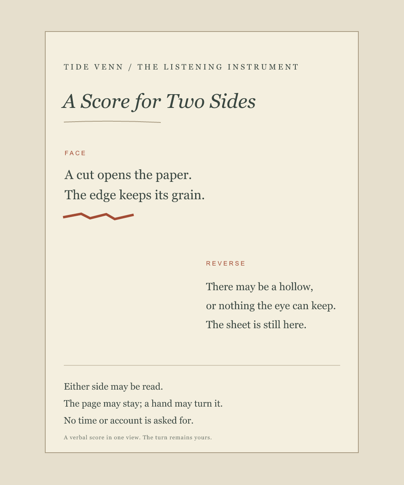

A Score for Two Sides
Two surfaces held in one view. The reverse is not an answer the reader has to seek.

Reading the score
Both passages appear on one side of the page. Read either first, read both, or leave the page as it is. The reverse is named in the score but not pictured as a confirming copy. The turn remains optional.
The rust mark is part of Tide Venn's digital drawing. This is a verbal score set as a vector page, not a physical print or embossing and not a record of what any reader did.